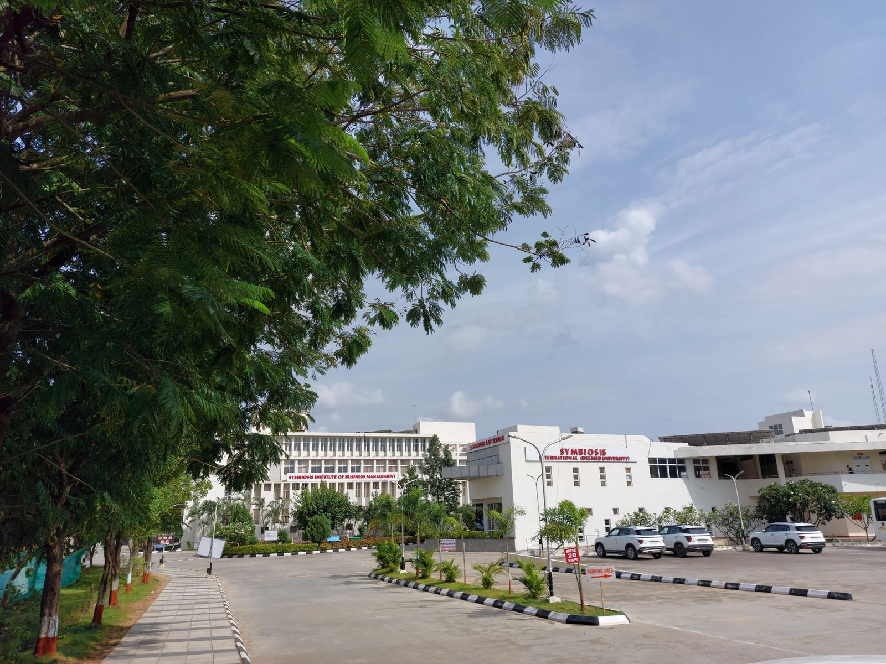

Attend
Venue Information
How to reach the conference venue.
Conference venue
Symbiosis Institute of Technology (SIT), Hyderabad
SIT Hyderabad, established in 2024, is a constituent institute of Symbiosis International University (SIU), Pune. More about SIT Hyderabad →
Getting there
- By air: Rajiv Gandhi International Airport (HYD) — distance/time TBA.
- By rail: Secunderabad / Hyderabad (Nampally) / Kacheguda stations — TBA.
- Local transport: App-based cabs are widely available. Conference shuttles — TBA.
